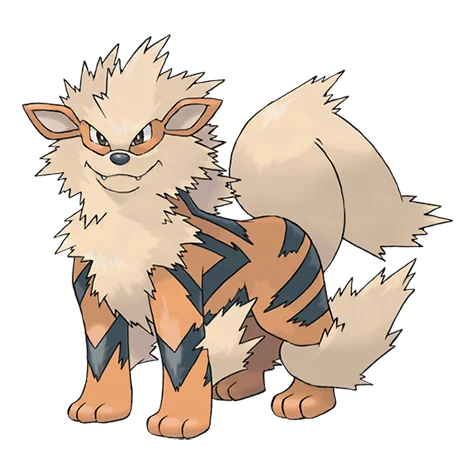
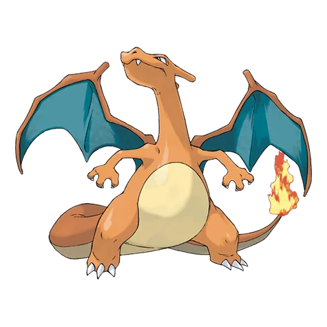

Pokemons Tipo Fuego
Los Pokémon de Tipo Fuego son conocidos por su temperamento apasionado y su capacidad para generar y manipular llamas intensas. Son una de las piezas fundamentales en el equilibrio de tipos, destacando por su gran poder ofensivo y su efectividad contra Pokémon de tipo Planta, Hielo, Bicho y Acero.
Muchos de ellos habitan en zonas cálidas como volcanes o desiertos, y su energía suele estar ligada a su estado de ánimo: cuanto más entusiasmados están, más calientes son sus llamas.

Flareon
Almacena aire en su cuerpo y lo calienta hasta alcanzar los 1700 grados para lanzar llamaradas.
Fuego
Ninetales
Muy inteligente y vengativo. Se dice que cada una de sus nueve colas tiene poderes mágicos.
Fuego
Arcanine
Un Pokémon legendario en China. Es admirado por la gracia con la que corre.
FUEGO
Charizard
Vuela por el cielo en busca de oponentes fuertes. Su fuego se vuelve más caliente cuanto más lucha.
Fuego Volador